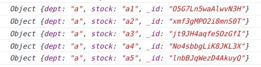
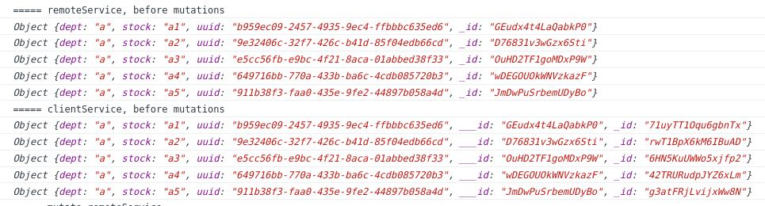

Database records
Our offline-first strategy creates a local Feathers service containing a copy of the records on a remote Feathers service, or of only a subset of them.
The remote database may be any having a Feathers adapter: NeDB, MongoDB, Sequelize, etc. The local database may be any having a Feathers adapter than can reside data on the local platform. For example:

Its not possible to exactly copy the contents of one Feathers service to another.
Some databases use _id as their record id, while others use id.
Some have string ids, while others use numbers.
Some allow you to set the id when the record is bring created,
others set the id themselves.
Therefore the layout of the local database differs slightly from the remote's. However these will have a minimal impact on your existing database design, as that was one of our goals.
Its non uncommon for records to contain the keys of other records. These references are retained in the local copies, you just have to understand how.
Record layouts for snapshot and realtime
Assume the remote service has this layout.

The local service will have this layout using the snapshot or realtime strategies.

Any remote service's id field is renamed __id on the local service.
Any _id to ___id.
If you would search the remote service for records having a specific id value,
you can search the local service for that __id value.
ProTip IMPORTANT: Do not depend on the local service's
idand_idvalues. They are likely to change when the client service recovers from a disconnection.
Record layouts for other strategies
The remaining strategies require you have a
uuid
field in the record layout.
There is no avoiding this when you are capable of creating new records.
The remote and local services may have these record layouts.

You may have to add the uuid field to your present layouts.
You can generate them with:
const { getUuid } = require('feathers-mobile/lib/utils/hash');
...
data.uuid = getUuid();
In existing databases, you will probably continue to use references to other records
which are based on __id and ___id fields.
However you are advised to use the uuid field in new databases.
Don't change the configuration id property
Feathers supports a database configuration property id to specify which field
is used as the index for the get, update, patch and remove methods.
You cannot use this feature with offline-first
as it depends on referencing the record key.